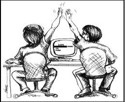

Pair Programming
Pair programming was one thing I was nervous about when starting Dev Bootcamp. I was envisioning awkward moments, not being able to keep up, or being stuck doing all the work.
However, I was pleasantly surprised when I discovered it was actually almost always a enjoyable and beneficial experience. I noticed that I end most pairing sessions with a much better understanding of the material, as well as a smile on my face.
When pair programming, it is amazing how easily you can learn new tricks or new ways of doing things from your partner. Two people rarely have the same range of knowledge. When working together, knowledge gaps are filled quickly just by communicating while doing the work.
Still, pair programming is not always easy for me. I have a tendency to have a hard time explaining what I'm thinking. I know I'll have to work on this, because clear communication is essential to pair programming. I also struggle with coming up with solutions when I feel like I'm put on the spot. I feel a lot of pressure to get the answer instantly and my brain freezes, which is a stressful situation.
Feedback
I was also pleasantly surprised to read my feedback, which was overwhelmingly positive. It was good to hear that I had helped other students to get a better understanding of the material, just as others had done for me.
I wouldn't mind getting more constructive feedback, so I could improve my pairing skills. I did get a comment that reflected my difficulty expressing myself, which I am aware is an area in need of improvement.
I know it is difficult to write critical feedback, which is why I probably haven't gotten much of it. When writing feedback, I have found it extremely difficult to find things to critique. This is not because I am trying extra hard to be nice, but because my pair partners have been pretty excellent so far.
Pair programming and feedback have been great learning tools so far at Dev Bootcamp.